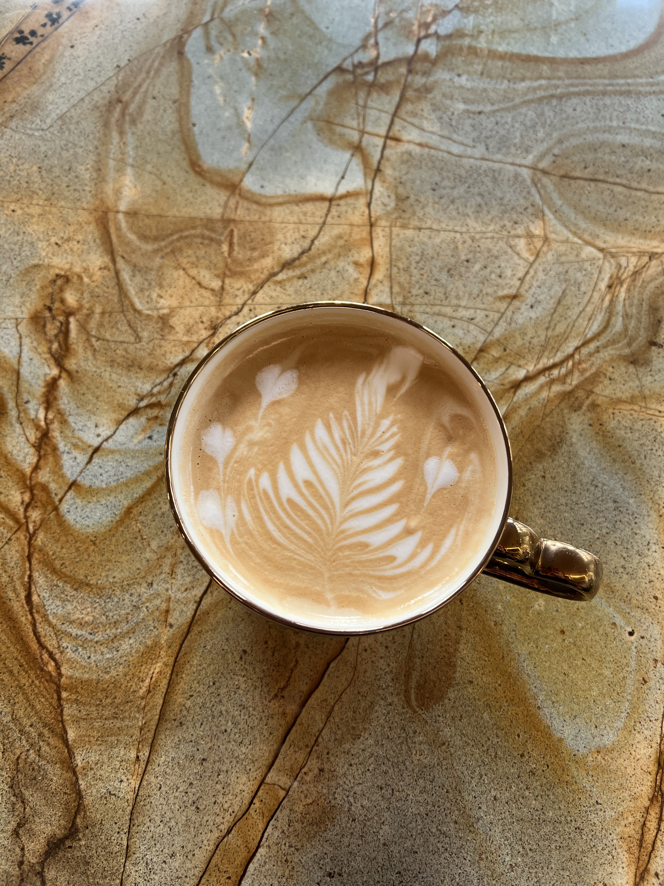

My Latte Art
It is not a secret that a well-steamed milk and a perfect foam not only makes a perfect-flavored coffee, but also enables barista to draw wonderful art on your Latte. Here are some of my Latte Art drawings that I made for my clients. I enjoy trying different designs but most commonly I do Rosseta and Simple Tulip.

It took me about two months to learn the most basic designs and how to properly steam milk in order to have a perfect texture for drawing. However, right now it is harder to make a coffee without a design than it is with one. It all comes with practice and patience!